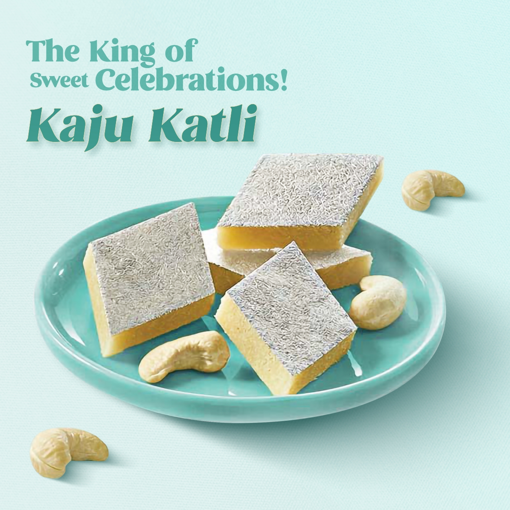
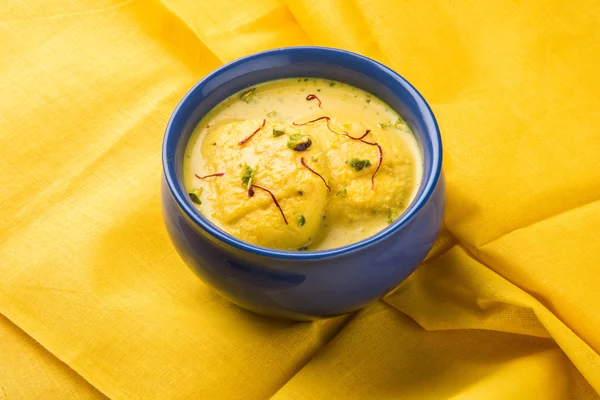
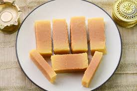
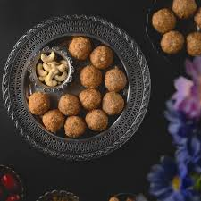

Gulam Jamun
Ingredients
- Sugar
- milk powder
- ghee
Recipe
- Mix milk powder, flour, and ghee to form a soft dough.
- Roll the dough into small balls.
- Boil sugar, water, and cardamom to make a syrup.
- Fry the balls until golden, then soak them in the syrup.

Barfi
Ingredients
- Sugar
- milk powder
- chopped nuts
- Ghee
Recipe
- Mix 1 cup condensed milk with 2 cups milk powder in a pan.
- Cook on low heat, stirring until it thickens and leaves the sides of the pan.
- Add cardamom powder and pour into a greased tray.
- Let it set, then cut into squares to serve.

Kaju Katli
Ingredients
- Sugar
- Cashews
- Ghee
- Milk Powder
- Silver leaf or Vark
Recipe
- Soak 1 cup cashews, then grind to a fine powder.
- Heat 1 cup sugar with 1/2 cup water until it forms a one-string syrup.
- Add cashew powder to the syrup and cook until it thickens.
- Roll out the mixture, cut into diamonds, and enjoy

Rasmalai
Ingredients
- Rabri
- Sugar
- Chopped nuts
- Paneer
Recipe
- Boil milk, add lemon juice to curdle, then strain.
- Knead chhena and form small balls.
- Boil sugar and water, add balls, cook until they puff up.
- Soak in sweetened milk and chill before serving.

Mysore Pak
Ingredients
- Sugar
- Besan
- Ghee
Recipe
- Cook 1 cup besan (chickpea flour) in 1 cup ghee until fragrant.
- In a separate pan, make a syrup by dissolving 1 cup sugar in 1/2 cup water.
- Gradually add the syrup to the besan mixture, stirring continuously.
- Cook until the mixture thickens and leaves the sides of the pan.

Ladoo
Ingredients
- Besan
- Sugar
- Chopped nuts
- Ghree
Recipe
- Roast 1 cup besan in 1/4 cup ghee until golden.
- Make a syrup with 1 cup sugar and 1/2 cup water.
- Mix roasted besan with the syrup.
- Shape into small balls(ladoos)
